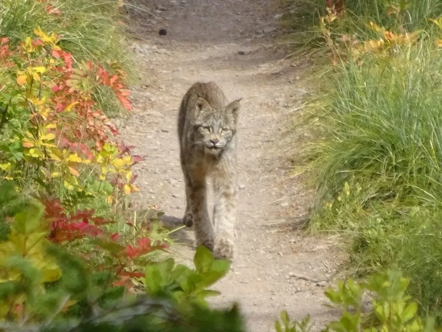

哺乳动物 · 动物界
加拿大猞猁 Lynx canadensis

北方针叶林中的中型猫类，脚掌宽大如雪鞋，耳尖有黑色簇毛，几乎以雪鞋兔为食，种群数量随猎物周期而起伏。
- 分类
- 门脊索动物门纲哺乳纲目食肉目科猫科属猞猁属
- 栖息环境
- 北方针叶林、针阔混交林与深雪覆盖的灌丛
- 地理分布
- 阿拉斯加、加拿大及美国北部与落基山区的针叶林带
- 保护级别
- IUCN 无危（LC）；美国本土种群列为受威胁
物种志
加拿大猞猁体长 67–107 cm，尾长 5–13 cm，体重约 8–14 kg。毛色灰褐至淡黄褐，冬季转为灰白，全身斑点较淡，耳尖有黑色长簇毛，脚掌宽大且覆厚毛，像雪鞋一样分散体重，便于在深雪中行走。
它们分布于阿拉斯加、加拿大和美国北部的北方针叶林，多在夜间和晨昏单独活动，领地范围可达数十至上百平方公里。食物高度依赖雪鞋兔，约占食谱的六成至九成，也捕食松鸡、松鼠和雷鸟。每胎 1–5 仔，妊娠期约 63 天，幼仔与母亲共同生活约一年。种群数量随雪鞋兔的十年周期明显波动，南部种群受栖息地破碎化威胁。
形态与习性
- 食性雪鞋兔为主，也捕食松鸡、松鼠和雷鸟
- 体长67–107 cm，尾长 5–13 cm
- 体重约 8–14 kg
- 繁殖妊娠期约 63 天，每胎 1–5 仔
- 活动节律夜行与晨昏活动，独居，领域性强
- 特点脚掌宽大覆毛，耳尖有黑色簇毛
趣味知识
- 加拿大猞猁的大脚掌相当于天然雪鞋，能把体重分散在松软的深雪上。
- 它的食谱高度依赖雪鞋兔，兔群数量下降时，猞猁的繁殖率也随之降低。
- 加拿大猞猁与美洲山猫分布有重叠，但前者尾更短、耳簇更长、脚掌更宽。